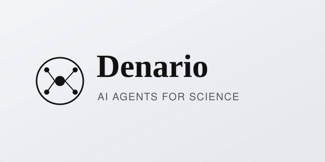
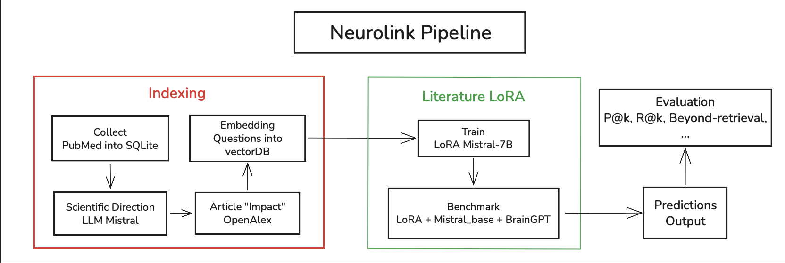
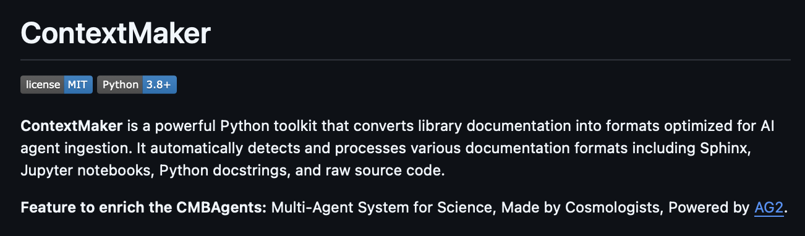

Freelance researcher and engineer building agentic AI, LLMs, and systems for neuroscience and medicine.
I am a freelance researcher and engineer building AI systems for scientific discovery. I design agentic architectures, fine-tune and evaluate LLMs, and ship research software used in real scientific workflows, from neuroscience literature forecasting to multi-agent research assistants for cancer research.
Recent work spans freelance projects for research labs and industry, including Neurolink at ENS Ulm, forecasting emergent neuroscience directions from PubMed; CMBAgents at the Cavendish Laboratory (ICML 2025); and multimodal RAG for medical data at EPFL.
I bring production-minded engineering to research teams: clear pipelines, reproducible experiments, and systems that researchers can actually run. Open to freelance collaborations in agentic AI, LLMs, and data-intensive science.

2025 — Present · Freelance
Freelance contribution to Denario, a multi-agent AI system for end-to-end scientific discovery — hypothesis generation, analysis, and manuscript drafting.

ENS Ulm, Paris
Modular pipeline to forecast emergent neuroscience research directions from PubMed literature — temporal LoRA on Mistral-7B, benchmarked against BrainGPT.
2026 · EPFL, Switzerland
Multimodal open RAG & extraction pipeline at EPFL (Swiss AI Lab): unified ingestion, hybrid retrieval, medical QA — including contributions to the RAG stack.

Jun 2025 — Aug 2025
Cavendish Laboratory work linked to ICML 2025: ContextMaker (LLM-ready scientific documentation) and Synapses (AI-assisted querying of cosmology Python libraries).